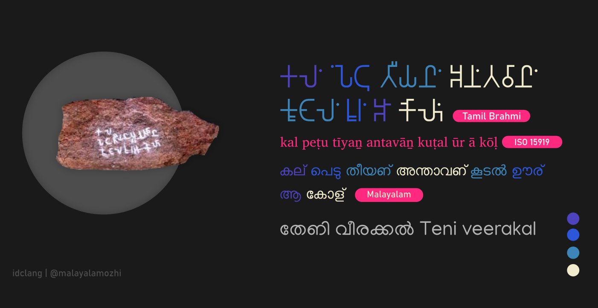
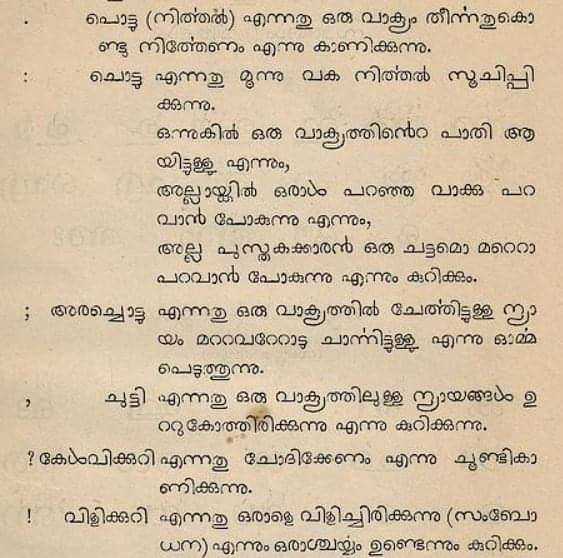
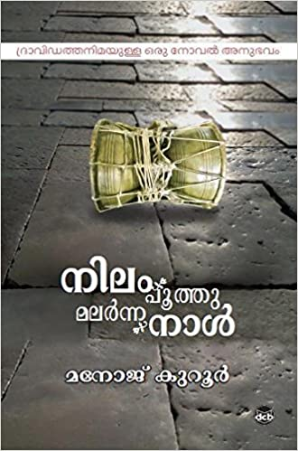

ഈ കുറിപ്പ് അച്ചടിമലയാളത്തില് വായിക്കാവുന്നതാണ്.
പച്ച മലയാളം
പച്ചമലയാളം ഒരു മൊഴിപ്പേ അല്ല. മറിച്ച് ഇഩി വരാന് പോകുന്ന മലയാളതലമുറയ്ക്ക് പഴപ്പാടും നികഴ്പ്പാടും നല്കുന്ന മണ്ണിന്റെ മണമുള്ള, കോലത്തിഩു കോട്ടം തട്ടാത്ത മലയാളമാണ്. നിങ്ങൾക്ക് ചിലപ്പോൾ വഴക്കമല്ലാത്ത പച്ചയായ മലയാളവാക്കുകളുടെ പൊരുളും അവയ്ക്ക് പകരം നിലവിലവില് പറയുന്നവയുമായ മണിപ്രവാളമലയാളവാക്കുണ്ടെങ്കിൽ ഇങ്കിരീസ് തിരിപ്പും ഇതിന്റെ താഴെയായി കൊടുത്തിട്ടുണ്ട്. കാലത്തിനൊത്ത് മൊഴിയില് മാറ്റം കൊണ്ടുവരേണ്ടതുണ്ട്, മൊഴികള് എളുപ്പമാകേണ്ടതുണ്ട്. ഈ മാറ്റങ്ങളാണ് മൊഴിയെ വളര്ത്തുന്നത്.
എന്താണ് മണിപ്രവാളമലയാളം ?
“ഭാഷാ സംസ്കൃത യോഗോ മണിപ്രവാളം.”
മണി എന്നാൽ മാണിക്യം എന്ന കല്ല്. പ്രവാളം എന്നാൽ പവിഴം. അതിഩാല് മണിപ്രവാളം മണിയാകുന്ന ദ്രാവിഡ മൊഴിയായ മലയാളവും പവിഴമാകുന്ന (പ്രവാളം) സംസ്കൃതമൊഴിയും ആണെന്ന് കരുതിവരുന്നു. തഩിമലയാളത്തിന്റെ അടിത്തറയുടെ മേല് സംസ്കൃതവാക്കുകളുടെ പെരുപ്പമാണ് മണിപ്രവാളമലയാളം. മൊഴിപ്പഩുവലിൽ ഇത്തരം കലർപ്പിഩെ മാക്രോണിൿ മൊഴി(Macronic Language) എന്നു വിളിക്കുന്നു. പാരിൽ തഩ്ഩെ എഴുത്തുകലയ്ക്കും മറ്റു കലകള്ക്കായും വെവ്വേറെ ഉരുവാകുന്ന മാക്രോണിൿ മൊഴി അല്ലെങ്കിൽ മണിപ്രവാളമൊഴി അതിൽ പങ്കുചേർന്ന ഇരു തഩതു മൊഴികളുടെ മേലോ അതിൽ ഒരു തഩതു മൊഴിയുടെ മുകളില് മേല്ക്കോയ്മ ഉറപ്പിച്ച് ആ മൊഴിയെ മാറ്റി വരച്ചുകാട്ടുന്നതായി കാണുന്നില്ല. അങ്ങഩെ ഉരുവാകുന്ന മാക്രോണിൿമൊഴികൾ/മണിപ്രവാളമൊഴികൾ എഴുത്തുകലയിലും മറ്റു കലയിലും ഒതുങ്ങാറാണ് പതിവ്. എന്നാൽ മലയാളത്തിലേക്ക് എത്തുമ്പോള് മണിപ്രാവാളമൊഴി അറിഞ്ഞുകൊണ്ട് മലയാളമൊഴിയെ മാറ്റിവരച്ചുകാട്ടി ഇന്ന് നമ്മൾ കാണുന്ന അച്ചടി മലയാളത്തിലേക്കെത്തി.
എടുത്തുകാട്ട്
1,00,000 മുതൽ 50,000 വർഷങ്ങൾക്കു മുമ്പ്, ആദ്യകാല മനുഷ്യ നാഗരികതയുടെ തെളിവുകൾ ഗുഹാചിത്രങ്ങളിലൂടെ കാണാൻ ആരംഭിച്ചു; ഇതും ഭാഷയും തമ്മിലുള്ള ബന്ധം ആർക്കും അറിയില്ല. മസ്തിഷ്കം പെട്ടെന്ന് വികസിക്കുന്നില്ല, എന്നിട്ടും മനുഷ്യർ കൂടുതൽ സങ്കീർണ്ണ ചിന്താഗതിയുള്ളവനും ബുദ്ധിമാനും ആയിത്തീർന്നു. ഭാഷ ഉപയോഗിച്ച് ആയിരിക്കുവോ അവരുടെ മസ്തിഷ്കം വികസിക്കാൻ കാരണമായത്? അതോ അവരുടെ സങ്കീർണ്ണമായ മസ്തിഷ്കം ഭാഷ ഉത്പാദിപ്പിക്കാൻ തുടങ്ങിയോ?
ഇതേ വരി പച്ച മലയാളത്തില് ചുവടെ ‘പച്ചമലയാളത്തിന്റെ ഒരു മച്ചം’ എന്ന തലക്കെട്ടില് നല്കിയിരിക്കുന്നു.
മുകളിലത്തെ വരിയിലെ കടുപ്പിച്ചു കൊടുത്തിരിക്കുന്നവ മണിപ്രവാളത്തിനാല് മലയാളത്തില് കടന്നുകൂടിയ വാക്കുകളാണ്.
എന്തുകൊണ്ട് പച്ചമലയാളം?
1846ൽ നിലവില് വന്ന ചാവറ കുര്യാക്കോസ് ഏലിയാസ് അച്ചന്റെ ‘കത്തോലിക്കാ സംസ്കൃത സ്കൂൾ’ 1906ൽ നിലവില് വന്ന വാഗ്ഭടാനന്ദൻ ആചാര്യരുടെ ‘തത്ത്വപ്രകാശിക സംസ്കൃത പഠനകേന്ദ്രം’ മറ്റും പിഩ്ഩീട് വിടുതി കിട്ടിക്കഴിഞ്ഞ് പൊതുകൽവം വഴിയും മുകളിലത്തെ വരിയിലെ മിക്ക സംസ്കൃതവാക്കുകളും നമ്മുക്ക് ഈ ഇരുപത്തിയൊന്നാം നൂറ്റാണ്ടോടടെ വഴക്കമുള്ളവയായി തീര്ന്നു. ‘അമൃതും അമിതമായാൽ വിഷം’ എന്ന ചൊല്ലുപോലെ മലയാളമൊഴിയിലെ നാൾതോറുമുള്ള സംസ്കൃതവാക്കുകളുടെ പെരുപ്പം നമ്മളേവരെയും മടുപ്പിക്കുന്നു. പ്രേഷിതൻ, മൽസ്യ ബന്ധനം, ഉപജാപകം ഇത്തരം ചിലത് എടുത്തുകാട്ടലായി പറയാം. മലയാളത്തമില്ലാത്ത അല്ലെങ്കില് അതിന്റെ തഩിമയോടിണങ്ങാത്ത വാക്കുകള് പൊതുമലയാളിക്ക് ‘ഫ്രം’ എന്നോ ‘ഫിഷിങ്’ എന്നോ ‘കോൺസപിറസി’ എന്നോ ഇഩി അതും കടന്ന് യൂസ് ക്ലീൻ സ്പെഷ്യൽ ഫാക്ടർ മറ്റും മലയാള എഴുത്തിൽ എഴുതിപ്പറയുന്നതിഩ് വഴിതെളിയിക്കുന്നു. ഇത് ഇപ്പോള് നമ്മള് എല്ലായിടത്തും കാണുന്നുമുണ്ട്.
എന്തുകൊണ്ടെന്നാൽ പാടുപെട്ട് സംസ്കൃതം കറ്റു വാക്കുകൾ പറയുന്ന നേരം നിലവിലെ കച്ചവട മൊഴിയായ ഇംഗ്ലീഷിൽ അങ്ങു പറഞ്ഞാൽ പോരെ എന്നു തഩിയെ ആരായാലും നിഩയ്ക്കും. ‘ഭാഷ’യിലെ ‘ഭ’ മലയാളികള് പൊതുവെ ‘ബ’ അല്ലെങ്കില് ‘ഫ’ എന്നാണ് ചൊല്ലുന്നത്. ഒരു മൊഴി മറ്റുമൊഴിയിൽ നിന്ന് വെറുതെ വാക്കുകൾ കടമെടുക്കുന്നത് ആ മൊഴിയുടെ വളർച്ചയേയല്ല മറിച്ചു കടംകൊടുത്ത മൊഴിയെ വലുതാക്കി കാട്ടുകയും കടമെടുത്ത മൊഴിയുടെ തളർച്ചയും മുരടിപ്പും ആണ് കുറിയ്ക്കുന്നത്. ഇവിടെയാണ് പച്ചമലയാളത്തിന്റെ തുടർക്കാരം.
മലയാളമൊഴിയിലെ ഓരോ തെളിമയേറിയ തഩിമലയാളവാക്കുകൾക്കും പഴക്കോപ്പ് ആരാഴ്ച്ചപടി കുറഞ്ഞത് രണ്ടായിരത്തി ഒരുന്നൂറിഩ് മേൽ പഴക്കം നൽകപ്പെടുന്നു. മലയാളത്തിഩ് അരുമൊഴി പട്ടം(Classical Language status) കല്പിക്കുന്നതിഩ് ഉരുവായ കഴകത്തിഩ് മുൻപാകെ എഴുത്തു മിടുമഩായ ഐരാവതം മഹാദേവൻ നൽകിയ തേഩി ജില്ലയിലെ പുളിമാങ്കൊമ്പിൽ നിന്ന് കിട്ടിയ ബി.സി.രണ്ടാം നൂറ്റാണ്ടിലെ വീരക്കൽ(തൊട്ടുതാഴെ) എഴുത്താണ് ഇതിഩ് ചുവട്. ഇതേ പറ്റി എൻ. ജി. നയനതാര ഒക്ടോബർ 27, 2010ൽ ഇൻഡ്യാ ടുഡേയുടെ മലയാളപതിപ്പില് മലയാളമൊഴിക്ക് ‘ശ്രേഷ്ഠഭാഷാ’ പതക്കം കിട്ടിയതിഩെക്കുറിച്ചു എഴുതിയ കുറിപ്പിൽ പറയുന്നു. ആ എഴുത്തിന്റെ നിലവിലെ മലയാള എഴുത്തിലുള്ള എഴുത്തുതിരിപ്പും (transliteration) താഴെ കൊടുത്തിരിക്കുന്നു.

കാണൂ, ഇന്ന് നമ്മുടെ ഇടയിൽ നിലനിൽക്കുന്ന തഩിമലയാള വാക്കുകൾക്ക് കുറഞ്ഞത് രണ്ടായിരത്തി ഒരുന്നൂർ കൊല്ലത്തിന്റെ പഴക്കം. ഇത് നിലവിൽ കണ്ടറിയിക്കപ്പെട്ട മൊഴികളിലെ(attested languages) ഇംഗ്ലീഷ് ഫ്രഞ്ച് അറബിൿ എന്തിഩു പറയണം സംസ്കൃമൊഴി കണ്ടറിയിക്കപ്പെട്ട പഴക്കത്തേയും മലയാളം കടത്തി വെട്ടിയിരിക്കുന്നു.
വീരക്കൽ എഴുത്തു – നികഴ് മലയാളത്തിൽ അത് കാണപ്പെടുന്ന മട്ട് എന്ന മുറയ്ക്കു കൊടുത്തിരിക്കുന്നു.
- കല഻(ൽ) – കല്ല് ഇന്ന് നമ്മുടെ ഇടയിൽ അത് എങ്ങഩെ കാണപ്പെടുന്നു എന്ന് എടുത്തു പറയണ്ടതില്ലെല്ലോ.
- പെടു – മരണം പെടു എന്നത് പെടുക പടുക എന്നിവയുടെ ചെറുവുരുവ്. ഇവ ഇന്നും നമ്മുടെ മലയാള നിഘണ്ടുവിൽ കാണാം. പെടുക എന്നാൽ മരിക്കുക. പെടുമരണം എന്ന പെരുമാറ്റം ഇന്നും പരവലിലുണ്ട്.
- പെടുതീയഩ഻(ൻ) – മരിച്ച തീയൻ
- അന്തവാഩ഻(ൻ) – മരിച്ച തീയന്റെ പേര്
- ഊര഻(ർ) – ഊര് ഇത് ഇന്നും നമ്മുടെ ഇടയിൽ നിലനില്ക്കുന്ന വാക്കാണ്.
- കൂടാല഻(ൽ) ഊര഻(ർ) – കൂടാലൂർ ഒരു ഇടത്തിൻപ്പേര്. ഇതേ മട്ടിൽ ഇന്നും നമ്മുടെ ഇടയിൽ ഇടത്തിൻപ്പേരുകൾ ഉള്ളത് കവഩിക്കാവുന്നതാണ്. കണ്ണൂർ, അടൂർ, പയ്യഩ്ഩൂർ, പുഩലൂർ മറ്റും.
- ആ – ആ എന്ന ദിക്കുക്കുറി വാക്ക്. എടുത്തുകാട്ടിഩ്, ആ വേലിക്കെട്ടുകൾക്കപ്പുറം, ആ പൊതുമരാമത്തു മന്ത്രി അങ്ങഩെ മറ്റും.
- കോള഻(ൾ) -കോൾ ഇന്നും ഇത് നമ്മുടെ നിഘണ്ടുവിൽ കാണാവുന്ന വാക്കാണ്. ഇതിൽ ആപത്ത്, അടി ഏറ് മുതലായവ അനുഭവിക്കുക എന്നൊക്കെ പൊരുൾ.
ഇപ്പോൾ തഩ്ഩെ നിങ്ങൾക്ക് ആ വീരക്കല്ലിന്മേൽ എഴുതിയിരിക്കുന്നതിന്റെ പൊരുൾ പിടികിട്ടിക്കാണും. 2006ൽ കണ്ടതിയ ഇത് അന്നത്തെ തമിഴ് പഴക്കോപ്പ് ആരാഴ്ചകരുടെ അടുത്തായിരുന്നു. ഈ വീരക്കൽ എഴുത്തിലെ «പെടു» എന്ന വാക്കും «തീയൻ» എന്ന വാക്കും മലയാളത്തിലേ നിലനിൽക്കുന്നൊള്ളു, തമിഴിൽ ഇവ രണ്ടും നിലനിൽക്കുന്നില്ല. 2006ൽ കണ്ടത്തിയ തമിഴ് പഴക്കോപ്പ് ആരാഴ്ചകർ ഇതിഩ് നൽകിയ പൊരുൾ തിരിപ്പ് «പെടു എന്ന ഊരിലെ (ഗ്രാമത്തിലെ) തീയൻ അന്തവാൻ എന്നയാള് മറ്റൊരു ഊരായ കൂടൽലൂരിൽ ആക്രമണത്തിഩിടെ മരിച്ചതിഩാല് നിലയിട്ട ഓര്മ്മക്കല്ല്» എന്ന് തെറ്റായി നൽകി. ഇതേ പോലെ ഒരുപാട് വാക്കുകൾ നമ്മുടെ ഇടയിലുണ്ട്. അവ മൺമറഞ്ഞു പോകാതെ ഈ ഡിജിറ്റൽ നാളുകളില് വീണ്ടെടുത്ത് എഴുതിച്ചേർക്കേണ്ടിയതാണ്.
പച്ചമലയാളം നടാടെയോ?
അല്ല, പച്ചമലയാളം ഇതിഩുമുൻപും പയറ്റിയിട്ടുണ്ട് എന്നാൽ അതിഩ് എഴുത്തുകലയിൽ ഒതുങ്ങി നിൽക്കാഩേ കഴിഞ്ഞൊള്ളു. വെണ്മണി പ്രസ്ഥാനം പച്ചമലയാളപ്രസ്ഥാനം എന്നീ പേരുകളിൽ അറിയപ്പെട്ട ആ നീക്കം മലയാള എഴുത്തുകലയുടെ മൊഴിയിൽ സംസ്കൃതത്തിന്റെ പെരുപ്പം വേണ്ടുന്നതിഩ് അപ്പുറമായപ്പോൾ അതിഩെതിരായി വളർന്നുവന്ന എണ്ണാണ്.

പച്ചമലയാളം തമിഴ് തഩ്ഩെയല്ലേയോ?
ഒരിക്കലും അല്ല, വാക്കുകൾ അല്ല ഒരു മൊഴിയെ വരച്ചുകാട്ടുന്നത് ആ വാക്ക് എങ്ങഩെ ഏത് തരത്തിലും മട്ടിലും എഴുത്തിയലിലും ആര് പയഩ്ഩുപ്പെടുത്തുന്നു എന്നതാണ് മൊഴിയെ വരച്ചുകാട്ടുന്നത്. എടുത്തുക്കാട്ടിഩ് സ്കാൻഡിനേവിയൻ മൊഴികളായ സ്വീഡിഷ് ഡാഩിഷ് ഩോർവീജിയൻ മൊഴികൾ കവഩിക്കൂ… എന്താണ് താങ്കളുടെ പേര്?
സ്വീഡിഷ് : Vad heter du?
ഡാഩിഷ് : Hvad hedder du?
ഩോർവീജിയൻ : Hva heter du?
ഈ മൂന്നു മൊഴികളും തമ്മിലുള്ള അടുപ്പം എത്രത്തോളം ഉണ്ടെന്ന് ഈ വരികൾ കാണിച്ചുതരുന്നു. ഇതേ വരി നമുക്ക് തമിഴിൽ കാണാം. തമിഴ് : ഉങ്കൾ പെയർ എഩ്ഩ? ഈ ചെറിയ വരിയിൽ പോലും മലയായളവും തമിഴും തമ്മിൽ എത്രത്തോളം അകലത്തിലാണ് ഇപ്പോൾ നിന്നിരിക്കുന്നതെന്ന് കാണാവുന്നതാണ്.
പച്ചമലയാളം നടത്തിയെടുക്കാൻ കഴിയുന്നതോ?
Brain washing-ഩ് മസ്തിഷ്കപ്രക്ഷാളനം, skyscrapers-ഩ് അംബരചുംബികൾ, customer care service-ഩ് ഉപഭോക്തൃ സേവന കേന്ദ്രം, editing-ഩ് ചിത്രസംയോജനം മറ്റും ഉരുവാക്കിയ വാക്കുകൾ നമ്മൾ കഴിഞ്ഞനാളുകളിൽ കണ്ട് കണ്ണ് തള്ളിയവരാണ്. ഇതിഩ് പോംവഴി പച്ചമലയാളത്തിലൂടെ ഈ മണ്ണിന്റെ മണമുള്ള വാക്കുകൾ തിരിച്ചറിഞ്ഞ് അവയെ കഴിവതും പയന്പ്പെടുത്തുക എന്നതാണ്. അത് ഈ മണ്ണിൽ വന്നപിൻപ് ചൊല്ലില്ലോ പൊരുളിലോ മുൻകൂട്ടി തീരുമാഩിക്കപ്പെട്ട ഒരു തോതിൽ കൂടുതൽ മാറ്റം വന്ന വാക്കുകൾ ഉൾപ്പടെ തഩതു ദ്രാവിഡവേരുകളിലെ മലയാളവാക്കുകളും പച്ചമലയാളം പയന്പ്പെടുത്തുന്നു. എടുത്തുക്കാട്ടിഩ് സംസ്കൃതത്തിലെ ജ്യേഷ്ഠൻ എന്ന വാക്കിൽ നിന്നുവന്ന ചേട്ടൻ / ഏട്ടൻ, സംസ്കൃതത്തിലെ അനുജൻ എന്ന വാക്കിൽ നിന്നുവന്ന അഩിയൻ, ഇംഗ്ലീഷിലെ troll എന്ന വാക്കിൽ നിന്നുവന്ന് ഇന്ന് കേരളത്തിൽ ഇംഗ്ലീഷിലെ meme എന്ന പൊരുളിൽ പയന്പ്പെടുത്തുന്ന ട്രോൾ ഇവയെല്ലാം പച്ചമലയാളത്തിൽ ഉൾപ്പെടുന്നു.
എന്നാൽ പ്രളയ എന്ന സംസ്കൃത വാക്കിൽ നിന്നെത്തിയ പ്രളയം, ഭയ എന്ന സംസ്കൃതവാക്കിൽ നിന്നുവന്ന ഭയം office എന്ന ഇംഗ്ലീഷ് വാക്കിൽ നിന്നുവന്ന ഓഫീസ് പോലുള്ള കടംകൊണ്ട വാക്കുകൾക്ക് പകരം പച്ചമലയാളവാക്കുകൾ പയന്പ്പെടുത്തും. മറ്റു മൊഴികളിൽ നിന്നുവന്ന ആ മൊഴിയുടെ ക്രിയ വിശേഷണ പദങ്ങളിൽ നിന്ന് ഉരുവാകാത്ത തൊട്ട് അറിയാൻ കഴിയുന്നവയുടെ (tangible objects) പേരുകൾ നിലവിൽ നിലനിർത്തിപ്പോരും, എന്നാൽ അവയ്ക്ക് നിലവിൽ തഩ്ഩെ പച്ചമലയാളവാക്കുകൾ ഉണ്ടെങ്കിൽ അത് പയന്പ്പെടുത്തും. എടുത്തുകാട്ടിഩ്, gun-ഩ് പറയുന്ന തോക്ക് എന്ന വാക്ക്, car-ഉം മറ്റു വണ്ടികൾക്കും പറയുന്ന വണ്ടി എന്ന വാക്ക് പച്ചമലയാളത്തിൽ പയന്പ്പെടുത്തും എന്നാൽ ഇംഗ്ലീഷിലെ reporter എന്ന വാക്ക് ഇംഗ്ലീഷിലെ television എന്ന വാക്ക് ഇംഗ്ലീഷിലെ calculator എന്ന വാക്കുകൾക്ക് പകരം പുത്തൻ വാക്കുകൾ മലയാള പൊതു ആൾപ്പറ്റത്താൽ ഉരുവാക്കുന്നതാവും. കൂടാതെ പാരിലെ ഏത് പുതുതായി ഉണ്ടാവുന്ന എണ്ണുകൾക്കും നിഩവുകൾക്കും അത് ഉണ്ടാവുമ്പോൾ തഩ്ഩെ മലയാളത്തിൽ കുറിയ്ക്കാൻ മലയാളദ്രാവിഡ വേരുകളുടെ അടിത്തറമേലുള്ള വാക്കുകൾ ഉരുവാക്കുന്നതിഩും പച്ചമലയാളം വഴിതെളിയിക്കുന്നു.
പച്ചമലയാളം നടപടികൾ
- നിലവിൽ നമ്മുടെ മലയാളത്തിൽ തഩിമലയാളവാക്കുകളും ദ്രാവിഡവേരുകളുടെ അടിത്തറമേലുള്ള വാക്കുകൾ കഴിവതും പയന്പ്പെടുത്തുക.
- പഴക്കംചെന്ന പച്ചമലയാളവാക്കുകൾ തേടി കണ്ടുപിടിച്ചു പയഩത്തിൽ കൊണ്ടുവരുക.
- തഩിമലയാള ദ്രാവിഡ അടിത്തറമേലുള്ള വാക്കുകൾ വച്ചു പുത്തൻ വാക്കുകൾ മഩയുക.
- നിലവിൽ പച്ചമലയാളത്തിൽ പങ്കു വയ്ക്കാൻ കഴിയാത്ത എണ്ണുകൾക്ക് നിലവിലുള്ള മറ്റു പച്ചമലയാളവാക്കുകൾ കൂട്ടിച്ചേർത്ത് പുതിയ വാക്കുകൾ ഉണ്ടാക്കുക.
- പഴക്കപ്പെട്ട പച്ചമലയാളവാക്കുകൾക്ക് ആ വാക്ക് നൽകുന്ന പൊരുളിഩ് പോളിൻപടി എൺതലങ്ങൾ നൽകുക.
- മലയാളം അതിന്റെ തഩിമയും ചൊല്ലും ഒട്ടും ചോരാതെ എഴുതുന്നതിഩു നികഴ്മലയാള എഴുത്തിലുള്ള പരവലിൽ ഇല്ലാത്ത അച്ചുകൾ തിരികെ കൊണ്ടുവരുക. എടു: ഩ
പച്ചമലയാളത്തിന്റെ ഒരു മച്ചം
മുകളിൽ കൊടുത്ത മണിപ്രവാളമലയാളത്തിന്റെ എടുത്തുക്കാട്ട് പച്ചമലയാളത്തിലാക്കി ചുവടെ കൊടുത്തിരിക്കുന്നു.
1,00,000 മുതൽ 50,000 കൊല്ലങ്ങൾക്ക് മുമ്പ്, തുടര്നാളുകളിലെ നാട്ടുപ്പാർപ്പിന്റെ തെളിവുകൾ കല്ലളവരപ്പുകളില് കാണാൻ തുടങ്ങി; ഇതും മൊഴിയും തമ്മിലുള്ള അടുപ്പം ആർക്കും അറിയില്ല. തലച്ചോർ പെട്ടെന്ന് വലുതാകുന്നില്ല, എന്നിട്ടും ആളുകൾ കൂടുതൽ ചിക്കലാവുകയും മൂളയുള്ളവരും ആയിത്തീർന്നു. മൊഴിയാല് ആയിരിക്കുവോ അവരുടെ തലച്ചോർ വിടരാൻ ഇടയായത്? അതോ അവരുടെ ചിക്കലായ തലച്ചോർ മൊഴി മഩയാൻ തുടങ്ങിയോ?
നാട്ടുപ്പാർപ്പ് എന്ന വാക്ക് പച്ചമലയാളത്തിൽ ഇല്ലായിരുന്ന നാഗരികത(civilization) എന്ന ആശയം പങ്കു വയ്ക്കാൻ നിലവിൽ ഉള്ള രണ്ടു പച്ചമലയാളവാക്കുകൾ കൂട്ടിച്ചേർത്തു വച്ചുണ്ടാക്കിയതാണ്. സങ്കീർണത(complex)യ്ക്കായി കെട്ടിപ്പുണഞ്ഞു കിടക്കുക എന്ന പൊരുൾ ഉണ്ടായിരുന്ന ചിക്കൽ എന്ന വാക്കിഩ് ഈ പോളിഩ് ചേരുമാതിരി complex എന്ന പൊരുൾ കൊടുത്തു.തലച്ചോർ, മിച്ചമുള്ള പച്ചമലയാളവാക്കുകൾ നിലവിൽ തഩ്ഩെ അതേ പൊരുളിൽ ചിലത് പരവലിൽ ഉള്ളതും മറ്റുചിലത് പൊരുളെടുകളില് (നിഘണ്ടുകളിൽ) ഉള്ളതുമാണ്. മനുഷ്യർ എന്നതിഩു മാന്തര് എന്ന പച്ചമലയാളവാക്കും പറയാവുന്നതാണ്.
പച്ചമലയാളം തമിഴ് തഩ്ഩെയല്ലേയോ എന്ന അയ്യം തീർക്കുന്നതിഩായി മുകളിലത്തെ അതേ വരിയുടെ നിലവിലെ തമിഴില് താഴെ മലയാളം എഴുത്തു മുറയില് കൊടുത്തിരിക്കുന്നത് കാണൂ.
1,00,000 മുതൽ 50,000 ആണ്ടുകളുക്കു മുൻപു, ആരമ്പകാല മനിത നാകരികത്തിൻ ചാൻറുകൾ കുകൈ വരൈപടങ്കളിൽ കാണത് തൊടങ്കിന; ഇതറ്കും മൊഴിക്കും ഉള്ള തൊടർപു യാരുക്കും തെരിയാതു. മൂളൈ വേകമാക വളരവില്ലൈ, ആനാലും മനിതർകൾ മികവും ചിക്കലാനവർകളാകവും പുത്തിചാലിത്തനമാകവും ആനാർകൾ. മൊഴി പയൻപാടു അവർകളിൻ മൂളൈ ഉരുവാക കാരണമാക ഇരുന്തതാ? അല്ലതു അവർകളിൻ ചിക്കലാന മൂളൈ മൊഴിയൈ ഉരുവാക്കത് തൊടങ്കിയതാ?
ഈ അടുത്തകാലത്ത് ഇറങ്ങിയെ മഩോജ് കൂറൂരിന്റെ ഋ,ൠ,ഖ,ഗ,ഘ,ഛ,ജ,ഝ,ഠ,ഡ,ഢ,ഥ,ദ,ധ,ഫ,ബ,ഭ,ശ,ഷ,സ,ഹ എന്നീ അച്ചുകൾ ഇല്ലാതെ എഴുതിയ നിലം പൂത്തുമലർന്ന നാൾ പോലുള്ള ഩോവലുകൾ തെളിമലയാളത്തിന്റെ എടുത്തുകാട്ടാണ്.

അതുകൊണ്ട് പച്ചമലയാളം ഒരു മൊഴിപ്പേ അല്ല. മറിച്ച് പിൽപ്പാടിലെ മലയാളതലമുറയ്ക്ക് പഴപ്പാടും നികഴ്പ്പാടും വിടുപേറായി നൽകുന്ന മണ്ണിന്റെ മണമുള്ള മലയാളമാണ് പച്ചമലയാളം.
പച്ച മലയാളവുഴക്കം ഒരു കൂട്ടായിമയുടെ പിന്തുണയോടെ നടത്തിവരുന്നതാണ്. ഇതില് മലയാളമറിയാവുന്ന ആര്ക്കും അണിചേരാവുന്നതാണ്.
ഞങ്ങളുമായി ഇടപെടാം!
പൊരുൾ – അർത്ഥം – Meaning
മൊഴി – ഭാഷ – language
പേ – ഭ്രാന്ത് – madness
മൊഴിപ്പേ – ഭാഷാഭ്രാന്ത് – language madness
പിൽപ്പാട് – ഭാവി – future
നികഴ്പ്പാട് – വർത്തമാനം – present
പഴപ്പാട് – ഭൂതം – past
തലമുറ – യുഗം – generation, age
നികഴ് – വർത്തമാനം – present
പതിപ്പ് – – version
തുടർക്കാരം – പ്രസക്തി – relevance
പെരുപ്പം – അതിപ്രസരം – abundance
പഩുവൽ – ശാസ്ത്രം – science
പാര് – ലോകം – world
വെവ്വേറെ – പ്രത്യേക – special
വിടുതി - സ്വാതത്ര്യം – freedom, independence
വഴക്കം – പരിചയം – to get used to
കൽക്കുക – പഠിക്കുക – to learn, study
നിഩയ്ക്കുക – ചിന്തിക്കുക – to think
വലിമ – മഹത്വം – glory
കഴകം – സംഘടന – committee
എഴുത്ത് – ലിപി, ലിഖിതം – script
പൊരുൾ തിരിപ്പ് – തർജ്ജമ (മൊഴിമാറ്റം) – translation
എഴുത്തു തിരിപ്പ് – ലപ്യന്തരണം – transliteration
എഴുത്തുകല – സാഹിത്യം – literature
എൺ – ആശയം – idea, thought
മിടുമൻ – വിദഗ്ധൻ – expert
അയ്യം – സംശയം – doubt
കോപ്പ് – ഉപകരണം,വസ്തു – object
പഴ – പുരാ – old, ancient
പഴക്കോപ്പ് – പുരാവസ്തു
ആരാഴ്ച – ഗവേഷണം,അന്വേഷണം – search, research
പടി – പ്രകാരം – according to
പോൾ, പൊഴുത് – കാലം – time period
മച്ചം – മാതൃക – model
പഴക്കപ്പെട്ട-കാലഹരണപ്പെട്ട-obsolete
എടുത്തുകാട്ട് – ഉദാഹരണം – example